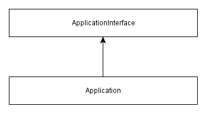
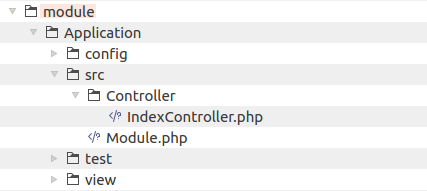
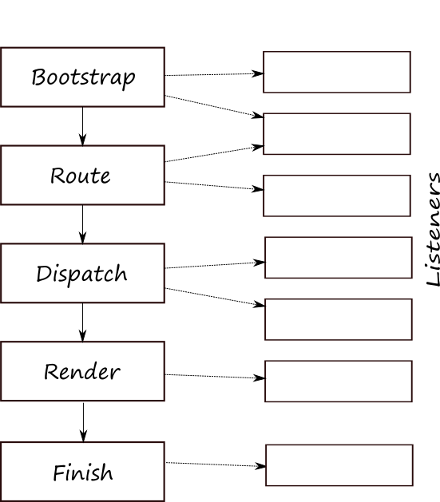
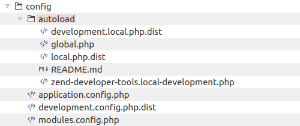
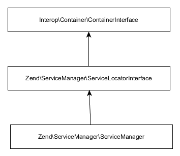

Website Operation
In this chapter we will provide some theory on how a typical Laminas Framework based web application
works. You'll learn some PHP basics like PHP classes, how PHP namespaces are used for avoiding name collisions,
what class autoloading is, how to define application configuration parameters and
the stages present in an application's life-cycle. You will also become familiar with such
important Laminas components as @Laminas\EventManager, @Laminas\ModuleManager and @Laminas\ServiceManager.
If instead of learning the theory, you want to have some practical examples, skip this chapter
and refer directly to Model-View-Controller.
Laminas components covered in this chapter:
| Component | Description |
|---|---|
@Laminas\Mvc |
Support of Model-View-Controller pattern. Separation of business logic from presentation. |
@Laminas\ModuleManager |
This component is responsible for loading and initializing modules of the web application. |
@Laminas\EventManager |
This component implements functionality for triggering events and event handling. |
@Laminas\ServiceManager |
Implements the registry of all services available in the web application. |
PHP Classes
PHP supports object oriented style of programming (OOP). In OOP, the main building block of your code is a class.
A class can have properties and methods. For example, let's create a PHP script named Person.php and
define a simple class named Person in that file:
<?php
class Person
{
private $fullName;
public function __construct()
{
// Some initialization code.
$this->fullName = 'Unknown person';
}
public function getFullName()
{
return $this->fullName;
}
public function setFullName($fullName)
{
$this->fullName = $fullName;
}
}
You may notice that in example above we have the opening
<?phptag which tells the PHP engine that the text after the tag is a PHP code. In example above, when the file contains only the PHP code (without mixing PHP and HTML tags), you don't need to insert the closing?>tag after the end of the code. Moreover, this is not recommended and may cause undesired effects, if you inadvertently add some character after the closing?>tag.
The Person class above has a private property $fullName and three methods:
-
__construct()method is a special method called constructor. It is used if you need to somehow initialize properties of the class. -
getFullName()andsetFullName()are public methods used to do something with the class.
Once you have defined the class, you can create objects of that class with the new operator, as follows:
<?php
// Instantiate the Person.
$person = new Person();
// Set full name.
$person->setFullName('John Doe');
// Print person's full name to screen.
echo "Person's full name is: " . $person->getFullName() . "\n";
Classes allow to split your functionality into smaller blocks and make it well organised. Laminas consists of hundreds of classes. You will also write your own classes in your web applications.
PHP Namespaces
When you use classes from different libraries (or even classes from different components of a single library)
in your program, the class names may conflict.
This means you can encounter two classes having the same name, resulting in a PHP interpreter error.
If you've ever programmed websites with Laminas Framework 1, you might remember those extra long
class names like Laminas_Controller_Abstract. The idea with long names was
utilized to avoid name collisions between different components. Each component defined
its own name prefix, like Laminas_ or My_.
To achieve the same goal, Laminas Framework uses a PHP language feature called namespaces. The namespaces allow to solve name collisions between code components, and provide you with the ability to make the long names shorter.
A namespace is a container for a group of names. You can nest namespaces into each other.
If a class does not define a namespace, it lives inside of the global namespace
(for example, PHP classes Exception and DateTime belong to global namespace).
A real-world example of a namespace definition (taken from @Laminas\Mvc component) is presented
below:
<?php
namespace Laminas\Mvc;
/**
* Main application class for invoking applications.
*/
class Application
{
// ... class members were omitted for simplicity ...
}
In Laminas Framework, all classes belong to top-level Laminas namespace.
The line 2 defines the namespace Mvc, which is nested into Laminas namespace,
and all classes of this component (including the @Application[Laminas\Mvc\Application] class shown in
this example on lines 7-10) belong to this namespace. You separate nested
namespace names with the back-slash character ('\').
In other parts of code, you reference the @Application[Laminas\Mvc\Application] class using
its fully-qualified name:
<?php
$application = new \Laminas\Mvc\Application();
Please note the leading back-slash in @
\Laminas\Mvc\Applicationname. If you specify a class name with leading back-slash, this means the fully-qualified class name. It is also possible to specify class name relatively to the current namespace, in that case you do not specify the leading back-slash.
It is also possible to use the alias (short name for the class) with the
help of PHP's use statement:
<?php
// Define the alias in the beginning of the file.
use Laminas\Mvc\Application;
// Later in your code, use the short class name.
$application = new Application();
Although the alias allows to use a short class name instead of the full name, its usage is optional. You are not required to always use aliases, and can refer the class by its fully-qualified name.
Every PHP file of your application typically defines the namespace (except index.php entry script and config files, which typically do not). For example, the main module of your site, the Application module, defines its own namespace whose name equals to the module name:
<?php
namespace Application;
class Module
{
// ... class members were omitted for simplicity ...
}
PHP Interfaces
In PHP, interfaces allow you to define which behavior a class should have, but without providing the implementation of such a behavior. This is also called a contract: by implementing an interface, a class agrees to the contract terms.
In Laminas Framework, interfaces are widely used. For example, the @Application class implements the
@ApplicationInterface, which defines the methods every application class must provide:
<?php
namespace Laminas\Mvc;
interface ApplicationInterface
{
// Retrieves the service manager.
public function getServiceManager();
// Retrieves the HTTP request object.
public function getRequest();
// Retrieves the HTTP response object.
public function getResponse();
// Runs the application.
public function run();
}
As you can see from the example above, an interface is defined using the interface
keyword, almost the same way you define a standard PHP class. As a usual class,
the interface defines methods. However, the interface does not provide any implementation
of its methods. In the @ApplicationInterface interface definition above, you can
see that every application implementing this interface will have method getServiceManager() for
retrieving the service manager (about the service manager, see later in this chapter), the
getRequest() and getResponse() methods for retrieving the HTTP request and response, respectively,
and method run() for running the application.
In Laminas Framework, by convention, interface classes should be named with
Interfacesuffix, like @ApplicationInterface.
A class implementing an interface is called a concrete class. The concrete @Application class
implements the @ApplicationInterface, which means it provides the implementation of the methods
defined by the interface:
<?php
namespace Laminas\Mvc;
class Application implements ApplicationInterface
{
// Implement the interface's methods here
public function getServiceManager()
{
// Provide some implementation...
}
public function getRequest()
{
// Provide some implementation...
}
public function getResponse()
{
// Provide some implementation...
}
public function run()
{
// Provide some implementation...
}
}
The concrete @Application class uses the implements keyword to show that it
provides an implementation of all methods of ApplicationInterface interface.
The @Application class can also have additional methods, which are not part
of the interface.
Graphically, the class relations are displayed using inheritance diagrams.
In figure 3.1, the diagram for @Application class is presented. The arrow
points from the child class to the parent class.

PHP Class Autoloading
A web application consists of many PHP classes, and each class typically resides in a separate file. This introduces the need of including the files.
For example, let's assume we have the file named Application.php
which contains the definition for the @\Laminas\Mvc\Application class
from the previous section. Before you can
create an instance of the @Application class somewhere in your code,
you have to include the contents of Application.php file (you can do this with the
help of require_once statement, passing it the full path to the file):
<?php
require_once "/path/to/laminas/laminas-mvc/src/Application.php";
use Laminas\Mvc\Application;
$application = new Application();
As your application grows in size, it may be difficult to include each needed file. Laminas Framework itself consists of hundreds of files, and it can be very difficult to load the entire library and all its dependencies this way. Moreover, when executing the resulting code, PHP interpreter will take CPU time to process each included file, even if you don't create an instance of its class.
To fix this problem, in PHP, the class autoloading feature has been introduced.
The PHP function spl_autoload_register() allows you to register
an autoloader function. For complex websites, you even can create
several autoloader functions, which are chained in a stack.
During script execution, if PHP interpreter encounters a class name which has not been defined yet, it calls all the registered autoloader functions in turn, until either the autoloader function includes the class or "not found" error is raised. This allows for "lazy" loading, when PHP interpreter processes the class definition only at the moment of class invocation, when it is really needed.
Class Map Autoloader
To give you an idea of how an autoloader function looks like, below we provide a simplified implementation of an autoloader function:
<?php
// Autoloader function.
function autoloadFunc($className)
{
// Class map static array.
static $classMap = [
'\\Laminas\\Mvc\\Application' => '/path/to/laminas/laminas-mvc/src/Laminas/Mvc/Application.php',
'\\Application\\Module' => '/path/to/app/dir/module/Application/Module.php',
//...
];
// Check if such a class name presents in the class map.
if(isset(static::$classMap[$className])) {
$fileName = static::$classMap[$className];
// Check if file exists and is readable.
if (is_readable($fileName)) {
// Include the file.
require $fileName;
}
}
}
// Register our autoloader function.
spl_autoload_register("autoloadFunc");
In the above example, we define the autoloadFunc() autoloader function,
which we will further refer to as the class map autoloader.
The class map autoloader uses the class map for mapping between class name and absolute path to PHP file containing that class. The class map is just a usual PHP array containing keys and values. To determine the file path by class name, the class map autoloader just needs to fetch the value from the class map array. It is obvious, that the class map autoloader works very fast. However, the disadvantage of it is that you have to maintain the class map and update it each time you add a new class to your program.
PSR-4 Standard
Because each library's vendor uses its own code naming and file organization conventions, you will have to register a different custom autoloader function per each dependent library, which is rather annoying (and actually this is an unneeded work). To resolve this problem, the PSR-4 standard was introduced.
PSR stands for PHP Standards Recommendation.
The PSR-4 standard defines the recommended code structure that an application or library must follow to guarantee autoloader interoperability. In two words, the standard says that:
- The class namespaces should be organized in the following way:
\<Vendor Name>\(<Namespace>)*\<Class Name>
-
Namespaces can have as many nesting levels as desired, but the Vendor Name should be the top-level namespace.
-
Namespaces should map to directory structure. Each namespace separator ('\') is converted to a OS-specific
DIRECTORY_SEPARATORconstant when loading from the file system. -
The class name is suffixed with .php extension when loading the file from the file system.
For example, for the @Laminas\Mvc\Application class,
you will have the following directory structure:
/path/to/laminas/laminas-mvc/src
/Laminas
/Mvc
Application.php
The disadvantage of this is that you need to put your code in multiple nested directories (Laminas and Mvc).
To fix this, the PSR-4 allows you to define that a contiguous
series of one or more leading namespace and sub-namespace names corresponds to a "base directory".
For example, if you have the @\Laminas\Mvc\Application fully qualified class name, and if you define that
the series @\Laminas\Mvc corresponds to the "/path/to/laminas/laminas-mvc/src" directory, you can organise
your files as follows:
/path/to/laminas/laminas-mvc/src
Application.php
For the code conforming to the PSR-4 standard, we can write and register an autoloader, which we will refer to as the "standard" autoloader:
<?php
// "Standard" autoloader function.
function standardAutoloadFunc($className)
{
// Replace the namespace prefix with base directory.
$prefix = '\\Laminas\\Mvc';
$baseDir = '/path/to/laminas/laminas-mvc/src/';
if (substr($className, 0, strlen($prefix)) == $prefix) {
$className = substr($className, strlen($prefix)+1);
$className = $baseDir . $className;
}
// Replace namespace separators in class name with directory separators.
$className = str_replace('\\', DIRECTORY_SEPARATOR, $className);
// Add the .php extension.
$fileName = $className . ".php";
// Check if file exists and is readable.
if (is_readable($fileName)) {
// Include the file.
require $fileName;
}
}
// Register the autoloader function.
spl_autoload_register("standardAutoloadFunc");
The standard autoloader works as follows. Assuming that the class namespace
can be mapped to the directory structure one-by-one, the function calculates
the path to PHP file by transforming back-slashes (namespace separators) to
forward slashes (path separators) and concatenating the resulting path with
the absolute path to the directory where the library is located. Then the
function checks if such a PHP file really exists, and if so, includes it
with the require statement.
It is obvious, that the standard autoloader works slower than the class map autoloader. However, its advantage is that you don't need to maintain any class map, which is very convenient when you develop new code and add new classes to your application.
Laminas Framework conforms to PSR-4 standard, making it possible to use standard autoloading mechanism across all its components. It is also compatible with other PSR-4 conforming libraries like Doctrine or Symfony.
Composer-provided Autoloader
Composer can generate autoloader functions (both class map autoloaders and PSR-4 standard autoloaders) for the code you install with it.
Laminas Framework uses the autoloader implementation provided by Composer. When you install a package with
Composer, it automatically creates the file APP_DIR/vendor/autoload.php,
which uses the spl_autoload_register() PHP function to register an autoloader. This way all PHP classes
located in APP_DIR/vendor directory are correctly autoloaded.
To autoload PHP classes located in your own modules (like Application module), you'll have to specify
the autoload key in your composer.json file:
"autoload": {
"psr-4": {
"Application\\": "module/Application/src/"
}
},
Then the only thing need to be done is to include that file in your website entry script index.php:
// Composer autoloading
include __DIR__ . '/../vendor/autoload.php';
The autoload.php file is generated each time you install a package with Composer. Besides that, to make Composer generate the autoload.php file, you may need to execute the
dump-autoloadcommand:
php composer.phar dump-autoload
PSR-4 and Module's Source Directory Structure
In Laminas Skeleton Application, you can see how the PSR-4 standard is applied
in practice. For the default module of your website, the Application module, PHP classes which
are registered with the standard autoloader are stored under the APP_DIR/module/Application/src
directory ("src" abbreviation means "source").
We will refer to the
srcdirectory as module's source directory.
For example, lets look at the IndexController.php file of Application module (figure 3.2).

As you can see, it contains the IndexController class 1 belonging to Application\Controller namespace.
To be able to follow the PSR-4 standard and use the standard autoloader with this PHP class,
we have to put it under the Controller directory under the module's source
directory.
HTTP Request and Response
When a site user opens a web page in a web browser's window, the browser generates a request message and sends it using HTTP protocol to the web server. The web server directs this HTTP request to your web application.
HTTP (stands for Hyper Text Transfer Protocol) -- a protocol for transferring data in the form of hyper text documents (web pages). HTTP is based on the client-server technology: the client initiates a connection and sends a request to web server, and the server waits for a connection, performs the necessary actions and returns a response message back.
Thus, the main underlying goal of any web application is handling the HTTP request and producing an HTTP response typically containing the HTML code of the requested web page. The response is sent by the web server to the client web browser and the browser displays a web page on the screen.
A typical HTTP request is presented below:
GET http://www.w3schools.com/ HTTP/1.1
Host: www.w3schools.com
Connection: keep-alive
Accept: text/html,application/xhtml+xml,application/xml;q=0.9,*/*;q=0.8
User-Agent: Mozilla/5.0 (Windows NT 6.1; WOW64)
Accept-Encoding: gzip,deflate,sdch
Accept-Language: en-US;q=0.8,en;q=0.6
Cookie: __gads=ID=42213729da4df8df:T=1368250765:S=ALNI_MaOAFe3U1T9Syh;
(empty line)
(message body goes here)
The HTTP request message above consists of three parts:
- The starting line (line 1) specifies the method of the request (e.g GET or POST), the URL string and HTTP protocol version.
- Optional headers (lines 2-8) characterize the message, the transmission parameters and provide other meta information. In the example above, each row represents a single header in the form of name:value.
- Optional message body contains message data. It is separated from the headers with a blank line.
The headers and the message body may be absent, but the starting line is always present in the request, because it indicates its type and URL.
The server response for the above request is presented below:
HTTP/1.1 200 OK
Cache-Control: private
Content-Type: text/html
Content-Encoding: gzip
Vary: Accept-Encoding
Server: Microsoft-IIS/7.5
Set-Cookie: ASPSESSIONIDQQRBACTR=FOCCINICEFAMEKODNKIBFOJP; path=/
X-Powered-By: ASP.NET
Date: Sun, 04 Aug 2013 13:33:59 GMT
Content-Length: 8434
(empty line)
(page content follows)
As you can see from the dump above, the HTTP response has almost the same format as the request:
-
The starting line (line 1) represents the HTTP protocol version, response status code and message (200 OK).
-
Optional headers (lines 2-10) provide various meta information about the response.
-
Optional message body follows the headers, and must be separated from headers by an empty line. The message body typically contains the HTML code of the requested web page.
Site Entry Script
When the Apache web server receives an HTTP request from a client browser, it executes the APP_DIR/public/index.php file, also called the entry script.
The entry script is the only PHP file accessible to the outside world. Apache web server directs all HTTP requests to this script (remember the .htaccess file?). Having this single entry script makes the website more secure (comparing with the situation when you allow everyone to access all PHP files of your application).
Although the index.php file is very important, it is surprisingly small (see below):
<?php
use Laminas\Mvc\Application;
use Laminas\Stdlib\ArrayUtils;
/**
* This makes our life easier when dealing with paths. Everything is relative
* to the application root now.
*/
chdir(dirname(__DIR__));
// Decline static file requests back to the PHP built-in webserver
if (php_sapi_name() === 'cli-server') {
$path = realpath(__DIR__ . parse_url($_SERVER['REQUEST_URI'], PHP_URL_PATH));
if (__FILE__ !== $path && is_file($path)) {
return false;
}
unset($path);
}
// Composer autoloading
include __DIR__ . '/../vendor/autoload.php';
if (! class_exists(Application::class)) {
throw new RuntimeException(
"Unable to load application.\n"
. "- Type `composer install` if you are developing locally.\n"
. "- Type `vagrant ssh -c 'composer install'` if you are using Vagrant.\n"
. "- Type `docker-compose run zf composer install` if you are using Docker.\n"
);
}
// Retrieve configuration
$appConfig = require __DIR__ . '/../config/application.config.php';
if (file_exists(__DIR__ . '/../config/development.config.php')) {
$appConfig = ArrayUtils::merge($appConfig, require __DIR__ . '/../config/development.config.php');
}
// Run the application!
Application::init($appConfig)->run();
Mainly, there are three things done in it.
First, in line 10, current working directory is changed to APP_DIR.
This makes it simple to define relative file paths in your application.
Next, in line 22, PHP class autoloading is initialized. This allows to easily load any
class either located in Laminas Framework library or in your application without the need
for require_once statement.
And finally, in line 40, an instance of @Laminas\Mvc\Application class is created.
The application is initialized with the settings read from application.config.php
configuration file, and, the application is run.
Events & Application's Life Cycle
As you've learned from the previous section, on every HTTP request, the @Laminas\Mvc\Application
object is created. Typically, an application "lives" for a second or less
(this time is enough to generate the HTTP response). The application's "life" consists of several stages.
Laminas Framework uses the concept of event. One class can trigger an event, and other classes may listen to events. Technically, triggering an event means just calling another class' "callback" method. The event management is implemented inside of the @
Laminas\EventManagercomponent.
Each application life stage is initiated by the application by triggering an event (this
event is represented by the @MvcEvent class living in @Laminas\Mvc namespace). Other
classes (either belonging to Laminas Framework or specific to your application) may listen
to events and react accordingly.
Below, the five main events (life stages) are presented:
Bootstrap. When this event is triggered by the application, a module has a chance to
register itself as a listener of further application events in its onBootstrap()
callback method.
Route. When this event is triggered, the request's URL is analyzed using a router class (typically, with
@Laminas\Router\Http\TreeRouteStack class). If an exact match between the URL and a route
is found, the request is passed to the site-specific controller class assigned to the route.
Dispatch. The controller class "dispatches" the request using the corresponding action method and produces the data that can be displayed on the web page.
Render. On this event, the data produced by the controller's action method are passed for rendering to
@Laminas\View\Renderer\PhpRenderer class. The renderer class uses a
view template file for producing an HTML page.
Finish. On this event, the HTTP response is sent back to client.
The event flow is illustrated in figure 3.3:

Although needed relatively rarely, some practical examples of how to listen and react to an event can be found in Creating a New Module chapter.
Application Configuration
Most of Laminas Framework components which are used in your website, require configuration (fine-tuning). For example, in the configuration file you define database connection credentials, specify which modules are present in your application, and, optionally, provide some custom parameters specific to your application.
You can define the configuration parameters at two levels: either at the application level, or at the module level. At the application level you typically define parameters which control the whole app and are common to all modules of your application. At the module level, you define parameters which affect only this module.
Some PHP frameworks prefer conventions over configuration concept, where most of your parameters are hard-coded and do not require configuration. This makes it faster to develop the application, but makes it less customizable. In Laminas Framework, the configuration over conventions concept is used, so you can customize any aspect of your application, but have to spend some time for learning how to do that.
Application-Level Config Files
The APP_DIR/config subdirectory contains application-wide configuration files. Let's look at this subdirectory in more details (figure 3.4).

The APP_DIR/config/application.config.php file is the main configuration file. It is used by the application on start up for determining which application modules should be loaded and which services to create by default.
Below, the content of application.config.php file is presented. You can see that the configuration file is just a usual PHP nested associative array, and each component may have a specific key in that array. You can provide inline comments for the array keys to make it easier for others to understand what each key means.
By convention, key names should be in lower case, and if the key name consists of several words, the words should be separated by the underscore symbol ('_').
return [
// Retrieve list of modules used in this application.
'modules' => require __DIR__ . '/modules.config.php',
// These are various options for the listeners attached to the ModuleManager
'module_listener_options' => [
// This should be an array of paths in which modules reside.
// If a string key is provided, the listener will consider that a module
// namespace, the value of that key the specific path to that module's
// Module class.
'module_paths' => [
'./module',
'./vendor',
],
// An array of paths from which to glob configuration files after
// modules are loaded. These effectively override configuration
// provided by modules themselves. Paths may use GLOB_BRACE notation.
'config_glob_paths' => [
realpath(__DIR__) . '/autoload/{{,*.}global,{,*.}local}.php',
],
// Whether or not to enable a configuration cache.
// If enabled, the merged configuration will be cached and used in
// subsequent requests.
'config_cache_enabled' => true,
// The key used to create the configuration cache file name.
'config_cache_key' => 'application.config.cache',
// Whether or not to enable a module class map cache.
// If enabled, creates a module class map cache which will be used
// by in future requests, to reduce the autoloading process.
'module_map_cache_enabled' => true,
// The key used to create the class map cache file name.
'module_map_cache_key' => 'application.module.cache',
// The path in which to cache merged configuration.
'cache_dir' => 'data/cache/',
// Whether or not to enable modules dependency checking.
// Enabled by default, prevents usage of modules that depend on other modules
// that weren't loaded.
// 'check_dependencies' => true,
],
// Used to create an own service manager. May contain one or more child arrays.
//'service_listener_options' => [
// [
// 'service_manager' => $stringServiceManagerName,
// 'config_key' => $stringConfigKey,
// 'interface' => $stringOptionalInterface,
// 'method' => $stringRequiredMethodName,
// ],
// ],
// Initial configuration with which to seed the ServiceManager.
// Should be compatible with Laminas\ServiceManager\Config.
// 'service_manager' => [],
];
In line 3 we have the modules key defining which modules will be loaded on start up. You can see that
the module names are stored inside of another config file modules.config.php, which lists all modules
present in your website.
In line 11, there is the module_paths key which tells Laminas about
directories where to look for source files belonging to modules. Application modules
that you develop are located under APP_DIR/module directory, and third-party
modules may be located inside the APP_DIR/vendor directory.
And in line 19 we have the config_glob_paths key, which tells Laminas where to
look for extra config files. You see that files from APP_DIR/config/autoload
which have global.php or local.php suffix, are automatically loaded.
Summing up, you typically use the main application.config.php file for storing the information
about which modules should be loaded into your app and where they are located and
how they are loaded (for example, you can control caching options here). In this
file you can also tune the service manager. It is not recommended to add more
keys in this file. For that purpose it is better to use autoload/global.php file.
And let's also look inside the modules.config.php file. Currently, you have the following modules
installed in your website:
return [
'Laminas\Session',
'Laminas\Mvc\Plugin\Prg',
'Laminas\Mvc\Plugin\Identity',
'Laminas\Mvc\Plugin\FlashMessenger',
'Laminas\Mvc\Plugin\FilePrg',
'Laminas\Form',
'Laminas\Router',
'Laminas\Validator',
'Application',
];
The Application module is a module containing your app's files. All other modules listed are Laminas Framework
components.
In Laminas, a special Composer plugin called component installer was introduced. If you remember, in the chapter Laminas Skeleton Application, we answered several yes/no questions of the installer, determining which components to install. And the installer injected those components' module names here, in
modules.config.php
Application-Level Extra Config Files
"Extra" config files, APP_DIR/config/autoload/global.php and APP_DIR/config/autoload/local.php files define application-wide environment-agnostic and environment-dependent parameters, respectively. These config files are automatically loaded and recursively merged with the module-provided config files, that's why their directory is named autoload.
Having different config files in APP_DIR/config/autoload directory, you might have been confused about which parameters should be put into each one. Here are some hints:
-
You use the autoload/global.php file for storing parameters which do not depend on the concrete machine environment. For example, here you can store parameters which override the default parameters of some module. Do not store sensitive information (like database credentials) here, for that purpose it's better to use autoload/local.php.
-
You use the autoload/local.php file for storing parameters specific to the concrete environment. For example, here you can store your database credentials. Each developer usually has a local database when developing and testing the website. The developer thus will edit the local.php file and enter his own database credentials here. When you install your site to the production server, you will edit the
local.phpfile and enter the credentials for the "live" database here.
Because the autoload/local.php file contains environment-specific parameters, in version control system you store its "distribution template" local.php.dist. Each developer in your team then renames the local.php.dist file into local.php and enters his own parameters. This local.php file should not be stored under version control, because it may contain sensitive information like database credentials (username and password), and you might want that other people do not see these.
Application-Level Development Config File
The application-level development configuration file (APP_DIR/config/development.config.php) presents only
when you enable the development mode. If you remember, we enabled the development mode earlier in the Laminas Skeleton Application chapter.
You enable the development mode with the following command:
php composer.phar development-enable
The development.config.php file is merged with the main application.config.php file. This allows you to
override some parameters. For example, you can:
- disable config caching. When you develop your website, you frequently modify your config files, so config caching may have undesired consequences, like inability to see the result of your changes immediately.
- load additional modules. For example, you can load LaminasDeveloperTools module only in development mode.
If you disable the development mode, the development.config.php file will be removed. So, you should not
store this file under the version control. Instead, store its distribution version, development.config.php.dist under version control.
Application-Level Extra Development Config Files
The application-level extra development configuration file (APP_DIR/config/autoload/development.local.php) presents only
when you enable the development mode.
The development.local.php file is merged with other module-level config files. This allows you to
override some module-specific parameters used in development environment only.
If you disable the development mode, the development.local.php file will be removed. So, you should not
store this file under the version control. Instead, store its distribution version, development.local.php.dist
under version control.
Module-Level Config Files
In figure 3.4, you could see that the Application module shipped with your application
has the module.config.php file, in which you put your module-specific parameters. Let's
look at module.config.php file of the Application module:
<?php
namespace Application;
use Laminas\Router\Http\Literal;
use Laminas\Router\Http\Segment;
use Laminas\ServiceManager\Factory\InvokableFactory;
return [
'router' => [
'routes' => [
'home' => [
'type' => Literal::class,
'options' => [
'route' => '/',
'defaults' => [
'controller' => Controller\IndexController::class,
'action' => 'index',
],
],
],
'application' => [
'type' => Segment::class,
'options' => [
'route' => '/application[/:action]',
'defaults' => [
'controller' => Controller\IndexController::class,
'action' => 'index',
],
],
],
],
],
'controllers' => [
'factories' => [
Controller\IndexController::class => InvokableFactory::class,
],
],
'view_manager' => [
'display_not_found_reason' => true,
'display_exceptions' => true,
'doctype' => 'HTML5',
'not_found_template' => 'error/404',
'exception_template' => 'error/index',
'template_map' => [
'layout/layout' => __DIR__ . '/../view/layout/layout.phtml',
'application/index/index' => __DIR__ . '/../view/application/index/index.phtml',
'error/404' => __DIR__ . '/../view/error/404.phtml',
'error/index' => __DIR__ . '/../view/error/index.phtml',
],
'template_path_stack' => [
__DIR__ . '/../view',
],
],
];
In this file, you register the module's controllers, put information about routing rules for mapping URLs to your controllers, register controller plugins, and also register view templates and view helpers (we will learn more about these terms in this chapter and in the next chapters).
Combining the Configuration Files
When an application is being created, module-provided configuration files and extra configuration files from APP_DIR/config/autoload directory are being merged into one big nested array, so every configuration parameter becomes available to any piece of the website. So, potentially, you are able to override some parameters specified by the modules.
You might also have seen the "combined" config file when installing PHP, where there is the main php.ini file and several extra config files, which are included into the main one. Such a separation makes your application configuration fine-grained and flexible, because you don't have to put all your params to a single file and edit it each time you need to change something.
The configuration files are loaded in the following order:
-
The main application.config.php file is loaded first. It is used to initialize the service manager and load application modules. The data loaded from this config is stored alone and not merged with other config files.
-
Configuration files for each application module are loaded and merged. Modules are loaded in the same order as they are listed in the application.config.php file. If two modules store (either intentionally, or by mistake) parameters in the similar-named keys, these parameters may be overwritten.
-
Extra config files from the APP_DIR/config/autoload folder are loaded and merged into a single array. Then this array is merged with the module config array produced on the previous stage, when loading the module configuration. Application-wide configuration has higher priority than the module configuration, so you can override module keys here, if you wish.
Module Entry Point
In Laminas, your web application consists of modules. By default, you have the single Application module, but can
create more if needed. Typically, your own modules are stored in APP_DIR/module directory, while third-party
modules live in APP_DIR/vendor directory.
On start up, when the @Laminas\Mvc\Application object is created, it uses the @Laminas\ModuleManager component to find and load
all modules registered in application config.
Each module of the web application has the Module.php file which is some kind
of entry point for the module. This file provides the Module class. Below, the contents
of skeleton application's Module class is presented:
<?php
namespace Application;
class Module
{
public function getConfig()
{
return include __DIR__ . '/../config/module.config.php';
}
}
The class Module belongs to the module's namespace (for the main module
it belongs to the Application namespace).
The getConfig() method is typically used to provide module's configuration to Laminas Framework (module.config.php file).
You can also register some event listeners here, we'll see how to do this later in Creating a New Module chapter.
Service Manager
You can imagine the web application as a set of services. For example, you can have an authentication service responsible for logging in the site users, entity manager service responsible for accessing the database, event manager service responsible for triggering events and delivering them to event listeners, etc.
In Laminas Framework, the @ServiceManager class is a centralized container for all
application services. The service manager is implemented in @Laminas\ServiceManager
component, as the @ServiceManager class. Class inheritance diagram is shown in figure 3.5 below:

The service manager is created on application start up (inside of init()
static method of @Laminas\Mvc\Application class).
The standard services available through service manager are presented in table 3.1.
This table is incomplete, because the actual number of services registered in service manager
may be much bigger.
| Service Name | Description |
|---|---|
Application |
Allows to retrieve the singleton of @Laminas\Mvc\Application class. |
ApplicationConfig |
Configuration array extracted from application.config.php file. Merged configuration array extracted from module.config.php files merged with autoload/global.php and autoload/local.php. |
EventManager |
Allows to retrieve a new instance of @Laminas\EventManager\EventManager class. The event manager allows to send (trigger) events and attach event listeners. |
SharedEventManager |
Allows to retrieve the singleton instance of @Laminas\EventManager\SharedEventManager class. The shared event manager allows to listen to events defined by other classes and components. |
ModuleManager |
Allows to retrieve the singleton of @Laminas\ModuleManager\ModuleManager class. The module manager is responsible for loading application modules. |
Request |
The singleton of @Laminas\Http\Request class. Represents HTTP request received from client. |
Response |
The singleton of @Laminas\Http\Response class. Represents HTTP response that will be sent to client. |
Router |
The singleton of @Laminas\Router\Http\TreeRouteStack. Performs URL routing. |
ServiceManager |
Service manager itself. |
ViewManager |
The singleton of @Laminas\Mvc\View\Http\ViewManager class. Responsible for preparing the view layer for page rendering. |
Table 3.1. Standard services
A service is typically an arbitrary PHP class, but not always. For example, when Laminas
loads the configuration files and merges the data into nested arrays, it saves the arrays
in the service manager as a couple of services (!): ApplicationConfig and Config.
The first one is the array loaded from application-level configuration file application.config.php,
and the later one is the merged array from module-level config files and auto-loaded
application-level config files. Thus, in the service manager you can store anything
you want: a PHP class, a simple variable or an array.
From table 3.1, you can see that in Laminas almost everything can be considered as a service. The service
manager is itself registered as a service. Moreover, the @Application class is also
registered as a service.
An important thing you should note about the services is that they are typically stored in a single instance only (this is also called the singleton pattern). Obviously, you don't need the second instance of the @
Applicationclass (in that case you would have a nightmare).But, there is an important exception from the rule above. It may be confusing at first, but the @
EventManageris not a singleton. Each time you retrieve the event manager service from service manager, you receive a new object. This is done for performance reasons and to avoid possible event conflicts between different components. We will discuss this further in the About Event Manager section later in this chapter.
The service manager defines several methods needed for locating and retrieving a service from the service manager (see the table 3.2 below).
| Method Name | Description |
|---|---|
has($name) |
Checks if such a service is registered. |
get($name) |
Retrieves a registered service's instance. |
build($name, $options) |
Always returns a new instance of the requested service. |
Table 3.2. ServiceManager methods
You can test if a service is registered by passing its name to the service manager's
has() method. It returns a boolean true if the service is registered, or
false if the service with such a name is not registered.
You can retrieve a service by its name later with the help of the service manager's get() method.
This method takes a single parameter representing the service name. Look at the following
example:
<?php
// Retrieve the application config array.
$appConfig = $serviceManager->get('ApplicationConfig');
// Use it (for example, retrieve the module list).
$modules = $appConfig['modules'];
And the build() method always creates a new instance of the service when you call it (comparing to get(), which
typically creates the instance of the service only once and returns it on later requests).
You will typically retrieve services from service manager not in any place of your code, but inside of a factory. A factory is a code responsible for creation of an object. When creating the object, you can retrieve services it depends on from the service manager and pass those services (dependencies) to the object's constructor. This is also called dependency injection.
If you have some experience with Laminas Framework 2, you may notice that the things are now a little different than before. In ZF2, there was
ServiceLocatorpattern allowing to get dependencies from service manager in any part of your app (in controllers, services, etc.) In Laminas, you have to pass dependencies explicitly. It is a little more boring, but it removes "hidden" dependencies and makes your code more clear and easier to understand.
Registering a Service
When writing your website, you will often need to register your own service
in the service manager. One of the ways to register a service is using the setService() method of the service manager.
For example, let's create and register the currency converter service class, which
will be used, for example, on a shopping cart page to convert EUR currency to USD:
<?php
// Define a namespace where our custom service lives.
namespace Application\Service;
// Define a currency converter service class.
class CurrencyConverter
{
// Converts euros to US dollars.
public function convertEURtoUSD($amount)
{
return $amount*1.25;
}
//...
}
Above, in lines 6-15 we define an example CurrencyConverter class (for simplicity, we implement
only a single method convertEURtoUSD() which is able to convert euros to US dollars).
// Create an instance of the class.
$service = new CurrencyConverter();
// Save the instance to service manager.
$serviceManager->setService(CurrencyConverter::class, $service);
In the example above, we instantiate the class with the new operator, and register it
with the service manager using the setService() method (we assume that the $serviceManager variable
is of type @Laminas\ServiceManager\ServiceManager class, and that it was declared somewhere else).
The setService() method takes two parameters: the service name string, and the service instance.
The service name should be unique within all other possible services.
Once the service is stored in service manager, you can retrieve it by name at any place of your
application with the help of the service manager's get() method. Look at the following
example:
<?php
// Retrieve the currency converter service.
$service = $serviceManager->get(CurrencyConverter::class);
// Use it (convert money amount).
$convertedAmount = $service->convertEURtoUSD(50);
Service Names
Different services can use different naming styles. For example, the same currency converter service
may be registered under the different names: CurrencyConverter, currency_converter
and so on. To introduce some uniform naming convention, it is recommended to register a service by
its fully qualified class name, as follows:
$serviceManager->setService(CurrencyConverter::class);
In the example above, we used the keyword class. It is available since PHP 5.5 and is used for class
name resolution. CurrencyConverter::class is expanded to the fully qualified name of the class,
like \Application\Service\CurrencyConverter.
Overriding an Existing Service
If you are trying to register the service name which is already present, the setService() method will throw an exception. But sometimes
you want to override the service with the same name (to replace it by the new one). For this purpose,
you can use the setAllowOverride() method of the service manager:
<?php
// Allow to replace services
$serviceManager->setAllowOverride(true);
// Save the instance to service manager. There will be no exception
// even if there is another service with such a name.
$serviceManager->setService(CurrencyConverter::class, $service);
Above, the setAllowOverride() method takes the single boolean parameter defining whether
to allow you replace the service CurrencyConverter if such a name is already present, or not.
Registering Invokable Classes
What is bad with the setService() method is that you have to create the service instance
before you really need it. If you never use the service, the service instantiation will only
waste the time and memory. To resolve this issue, the service manager provides you with the
setInvokableClass() method.
<?php
// Register an invokable class
$serviceManager->setInvokableClass(CurrencyConverter::class);
In the example above, we pass to the service manager the fully qualified class name of
the service instead of passing its instance. With this technique, the service
will be instantiated by the service manager only when someone calls the get(CurrencyConverter::class)
method. This is also called lazy loading.
Services often depend on each other. For example, the currency converter service may use entity manager service to read money exchange rates from database. The disadvantage of
setInvokableClass()method is that it doesn't allow to pass parameters (dependencies) to the service on object instantiation. To resolve this issue, you can use factories, as described below.
Registering a Factory
A factory is a class that can do only one thing - to create other objects.
You register a factory for a service with the setFactory() method of the service manager:
The simplest factory is @InvokableFactory - it is analogous to the setInvokableClass() method from the previous
section.
<?php
use Laminas\ServiceManager\Factory\InvokableFactory;
// This is equivalent to the setInvokableClass() method from previous section.
$serviceManager->setFactory(CurrencyConverter::class, InvokableFactory::class);
After you have registered the factory you can retrieve the service from service manager as usual with the get() method. The service
will be instantiated only when you retrieve it from service manager (lazy loading).
Sometimes, service instantiation is more complex than just creating the service instance
with new operator (like @InvokableFactory does). You may need to pass some parameters to the service's constructor or
invoke some service methods just after construction. This complex instantiation logic
can be encapsulated inside of your own custom factory class. The factory class typically implements the @FactoryInterface[Laminas\ServiceManager\Factory\FactoryInterface]:
<?php
namespace Laminas\ServiceManager\Factory;
use Interop\Container\ContainerInterface;
interface FactoryInterface
{
public function __invoke(ContainerInterface $container,
$requestedName, array $options = null);
}
As we see from the definition of the @FactoryInterface[Laminas\ServiceManager\Factory\FactoryInterface], the factory class must provide
the __invoke magic method returning the instance of a single service. The service manager is
passed to the __invoke method as the $container parameter; it can be used during the construction of
the service for accessing other services (to inject dependencies). The second argument ($requestedName) is
the service name. The third argument ($options) can be used to pass some parameters to the service, and
is used only when you request the service with the build() method of the service manager.
As an example, let's write a factory for our currency converter service (see the code below).
We don't use complex construction logics for our CurrencyConverter service, but for more complex
services, you may need to use one.
<?php
namespace Application\Service\Factory;
use Laminas\ServiceManager\Factory\FactoryInterface;
use Application\Service\CurrencyConverter;
// Factory class
class CurrencyConverterFactory implements FactoryInterface
{
public function __invoke(ContainerInterface $container,
$requestedName, array $options = null)
{
// Create an instance of the class.
$service = new CurrencyConverter();
return $service;
}
}
Technically, in Laminas you can use the same factory class for instantiating several services that have similar instantiation code (for that purpose, you can use the
$requestedNameargument passed to the__invoke()method of the factory). However, mostly you will create a different factory per each service.
Registering an Abstract Factory
Even more complex case of a factory is when you need to determine at run
time which service names should be registered. For such a situation,
you can use an abstract factory. An abstract factory class should
implement the @AbstractFactoryInterface[Laminas\ServiceManager\Factory\AbstractFactoryInterface] interface:
<?php
namespace Laminas\ServiceManager\Factory;
use Interop\Container\ContainerInterface;
interface AbstractFactoryInterface extends FactoryInterface
{
public function canCreate(ContainerInterface $container, $requestedName);
}
An abstract factory has two methods: canCreate()
and __invoke(). The first one is needed to test if the factory can
create the service with the certain name, and the latter one allows to actually
create the service. The methods take two parameters: service manager ($container) and
service name ($requestedName).
Comparing to usual factory class, the difference is that the usual factory class typically creates only a single type of service, but an abstract factory can dynamically create as many types of services as it wants.
You register an abstract factory with the setAbstractFactory() method of the service manager.
Abstract factories are a powerful feature, but you should use them only when really necessary, because they negatively impact the performance. It is better to use the usual (non-abstract) factories.
Registering Service Aliases
Sometimes, you may want to define an alias for a service. The alias
is like a symbolic link: it references the already registered service.
To create an alias, you use the service manager's setAlias() method:
<?php
// Register an alias for the CurrencyConverter service
$serviceManager->setAlias('CurConv', CurrencyConverter::class);
Once registered, you can retrieve the service by both its name and alias using the
service manager's get() method.
Shared and Non-Shared Services
By default, services are stored in service manager in single instance only. This is also called the singleton
design pattern. For example, when you try to retrieve the CurrencyConverter service twice, you will receive
the same object. This is also called a shared service.
But, in some (rare) situations, you will need to create a new instance of a service each time someone requests
it from service manager. An example is the @EventManager - you get a new instance of it each time you request it.
To mark a service as a non-shared, you can use service manager's setShared() method:
$serviceManager->setShared('EventManager', false);
Service Manager Configuration
In your website, you typically use service manager configuration to register your services (instead of calling service manager's methods as described above).
To automatically register a service within the service manager, typically the
service_manager key of a configuration file is used. You can put this key
either inside of an application-level configuration file or in a module-level
configuration file.
W> If you are putting this key in a module-level configuration file, be W> careful about the danger of name overwriting during the configs merge. W> Do not register the same service name in different modules.
This service_manager key should look like below:
<?php
return [
//...
// Register the services under this key
'service_manager' => [
'services' => [
// Register service class instances here
//...
],
'invokables' => [
// Register invokable classes here
//...
],
'factories' => [
// Register factories here
//...
],
'abstract_factories' => [
// Register abstract factories here
//...
],
'aliases' => [
// Register service aliases here
//...
],
'shared' => [
// Specify here which services must be non-shared
]
],
//...
];
In the example above, you can see that the service_manager key may contain several
subkeys for registering services in different ways:
- the
servicessubkey (line 7) allows to register class instances; - the
invokablessubkey (line 11) allows to register full class name of a service; the service will be instantiated using lazy loading; - the
factoriessubkey (line 15) allows for registering a factory, which is able to create instances of a single service; - the
abstract_factories(line 19) can be used for registering abstract factories, which are able to register several services by name; - the
aliasessubkey (line 23) provides an ability to register an alias for a service. - the
sharedsubkey (line 27) allows to specify which services must be non-shared.
As an example, let's register our CurrencyConverter service and create an alias for it:
<?php
use Laminas\ServiceManager\Factory\InvokableFactory;
use Application\Service\CurrencyConverter;
return [
//...
// Register the services under this key
'service_manager' => [
'factories' => [
// Register CurrencyConverter service.
CurrencyConverter::class => InvokableFactory::class
],
'aliases' => [
// Register an alias for the CurrencyConverter service.
'CurConv' => CurrencyConverter::class
],
],
//...
];
Plugin Managers
Now that you understand what service manager is, it shouldn't be very difficult for you to learn the concept of plugin managers. A plugin manager is almost the same as the service manager, but it can instantiate services of the single type only. Which plugin type a plugin manager may be hard-coded instantiated inside the plugin manager class.
Why would you need such thing? Actually, in Laminas, plugin managers are widely used, because they allow to instantiate a plugin only when it is needed (this reduces CPU and memory usage). There is a separate plugin manager for:
- controllers (the @
Laminas\Mvc\Controller\ControllerManagerclass) - controller plugins (the @
Laminas\Mvc\Controller\PluginManagerclass) - view helpers (the @
Laminas\View\HelperPluginManagerclass) - form elements (the @
Laminas\Form\FormElementManager\FormElementManagerV3Polyfillclass) - filters (the @
Laminas\Filter\FilterPluginManagerclass) - validators (the @
Laminas\Validator\ValidatorPluginManagerclass) - and probably other stuff
The fact that each plugin manager inherits from the @Laminas\ServiceManager\ServiceManager base
class allows all plugin managers to have similar configuration. For example, controllers are
registered under the controllers key in module.config.php file, and this key may have the same subkeys:
services, invokables, factories, abstract_factories, and aliases. The same structure has the
view_helpers key that is used for registering view helpers, the controller_plugins key that is used
for registering controller plugins, and so on.
About Event Manager
In this section, we will give some advanced information about event manager. You can relatively safely skip this section, however refer to it if you plan to implement some advanced event listeners in your website.
Previously in this chapter we have mentioned that the application life cycle consists of events.
One class can trigger an event, and other classes may listen to events. Technically, triggering an event means just calling
another class' "callback" method. The event management is implemented inside of
the @Laminas\EventManager component.
Laminas (and particularly its @
Laminas\Mvccomponent) hardly depends on events to operate, and because of that its source code is a combination of event listeners which is rather difficult to understand. Fortunately, in most cases you do not need to understand how Laminas triggers and handles events internally, you just need to understand what event is, what events present in application life cycle and what is the difference between usual event manager and shared event manager.
Event & MvcEvent
An event is technically an instance of the @Laminas\EventManager\Event class.
An event can basically have at least the following parts:
- name - uniquely identifies the event;
- target - this is typically a pointer to the object which triggered the event;
- and params - event-specific arguments passed to the event listeners.
It is possible to create custom types of events by extending the @Event[Laminas\EventManager\Event] class.
For example, the @Laminas\Mvc component defines the custom event type named @Laminas\Mvc\MvcEvent,
which extends the Event class and adds several properties and methods
needed for the @Laminas\Mvc component to work.
EventManager & SharedEventManager
It is important to understand the difference between the usual event manager and the shared event manager.
The usual event manager is not stored as a singleton in the service manager. Every time you request the @EventManager
service from the service manager, you receive a new instance of it. This is done for privacy and performance reasons:
-
It is assumed by default that the class triggering events will request and save somewhere its own private event manager, because it doesn't want other classes to automatically listen to those events. Events triggered by the class are assumed to belong to that class privately.
-
If anyone would be able to listen to any event triggered by any class, there would be performance hell - too many event listeners would be invoked, thus increasing page load time. It is better to avoid this by keeping events private.
But, in case if someone intentionally needs to listen to other's events, there is a special shared event manager. The @SharedEventManager
service is stored in the service manager as a singleton, so you can be sure everyone will have the same instance of it.
With the @SharedEventManager, you can attach a listener to private events triggered by certain class (or several classes).
You specify the unique class identifier(s) to which you would like to listen. That simple!
Some practical examples of how to listen and react to an event can be found in Creating a New Module chapter and User Management, Authentication & Access Filtering chapter.
Summary
In this chapter, we've learned some theory about laminas-based website operation basics.
Laminas uses PHP namespaces and class autoloading features, simplifying the development of applications which use many third-party components. The namespaces allow to solve the name collisions between code components, and provide you with the ability to make the long names shorter.
The class autoloading makes it possible to use any PHP class in any library installed with Composer
without the use of require_once statement. Composer also provides a PSR-4 autoloader for the classes
located in the modules of your web application.
Most of Laminas Framework components require configuration. You can define the configuration parameters either at the application level, or at the module level.
The main goal of any web application is handling the HTTP request and producing an
HTTP response typically containing the HTML code of the requested web page. When
Apache web server receives an HTTP request from a client browser, it executes the index.php
file, which is also called the site's entry script. On every HTTP request, the @Laminas\Mvc\Application
object is created, whose "life cycle" consists of several stages (or events).
The web application's business logic can be also considered as a set of services. In Laminas Framework, the service manager is a centralized container for all the application services. A service is typically a PHP class, but in general it can be a variable or an array, if needed.
-
IndexControllerclass is the default controller for the skeleton website. We will talk about controllers later in chapter Model-View-Controller. ↩